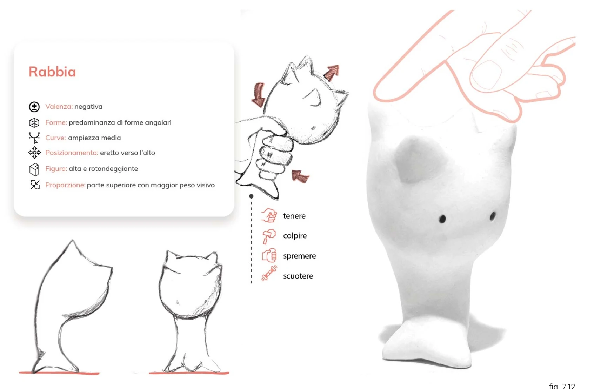
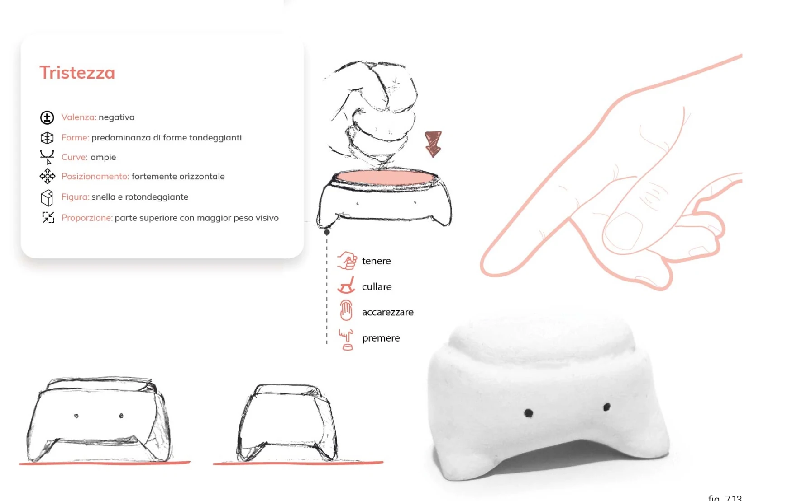
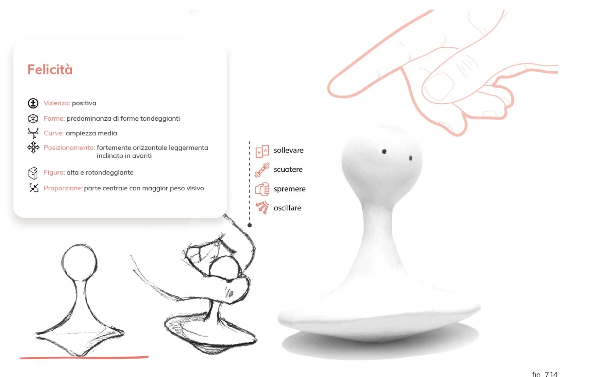
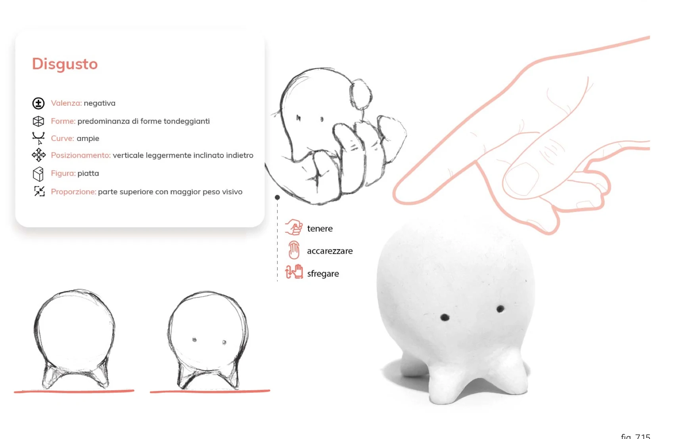
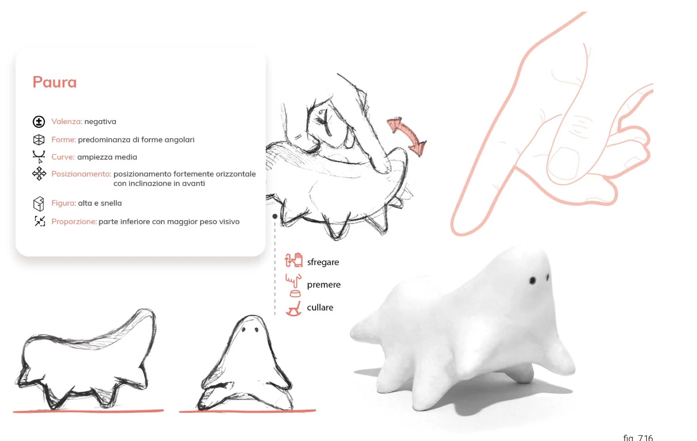
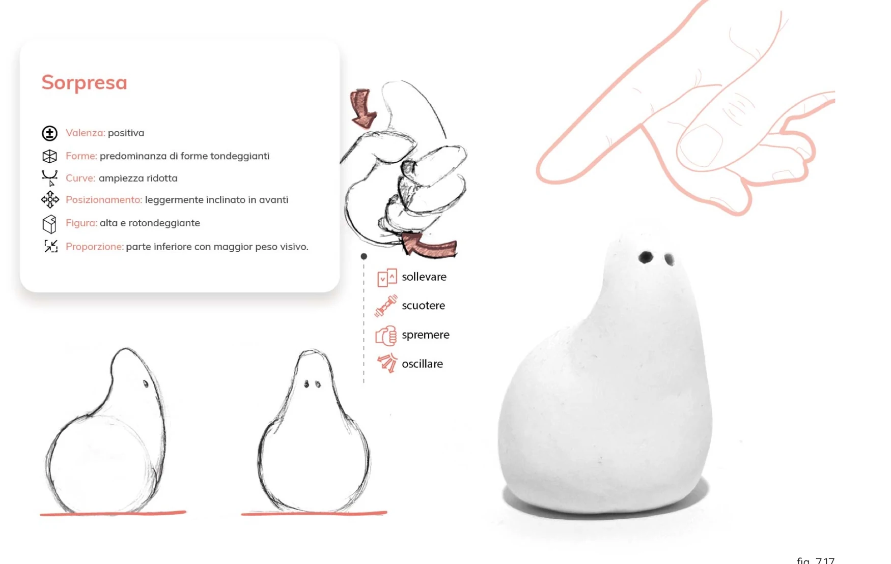
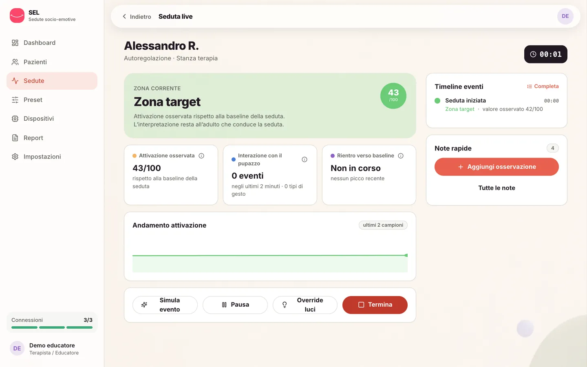
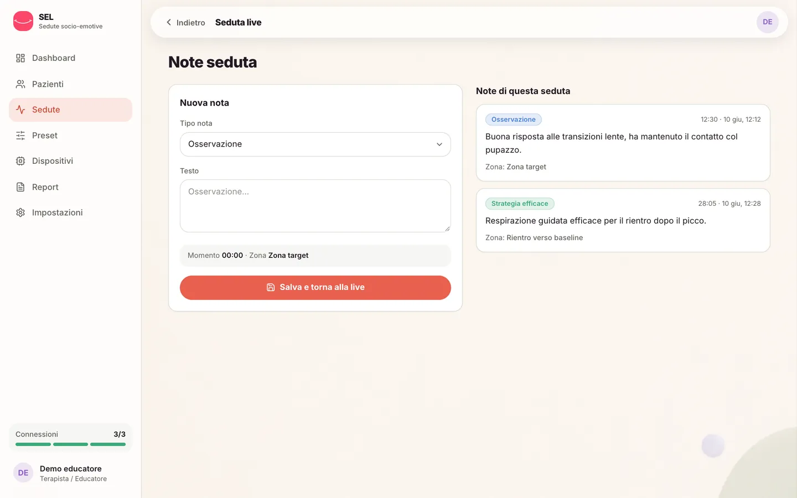
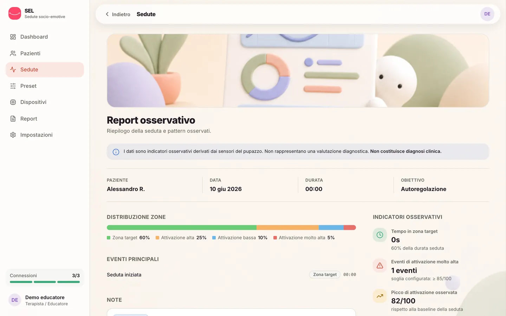
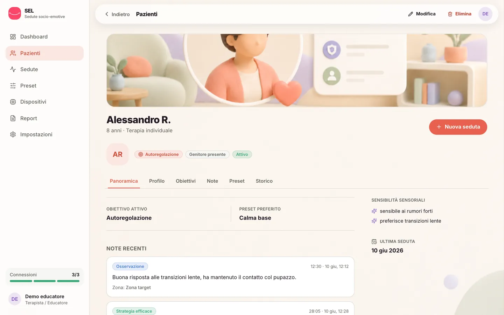

01
Before the session
A profile, a room, a paired device and a preset define the conditions.


Pair the character · Set the room’s light · Prepare the session
My doctoral research asked whether a child could act through a tangible object, notice the room respond with light and sound, and talk about that change with an adult. Years later I turned the research setup into a working platform for educators.
My role Doctoral researcher: interaction, form and prototype design. Later the educator PWA, end to end.
Under-activation
Drag or shake the character · illustrative
Can a sensor tell how someone feels?
I started with a wearable and a connected home: could movement or a physiological signal say enough about stress for the room to respond usefully? The same level of activation could accompany very different experiences.
A virtual focus group moved the work to a different setting: an adult and a child engaged in a story together. That shifted who had authority. The child could handle the character freely; the adult chose the story and helped interpret what happened.
The system only had to respond consistently enough for the link between movement and feedback to be noticed. Meaning stayed with the people in the room.
I varied silhouette, weight, posture and the gestures each form suggested, with two eyes as the shared visual language. The labels are my starting intentions, not what people saw.






Anger and joy were recognisable in the interview stories. Across the full set, associations varied. People read the same forms differently, so the later tool had to keep what happened and let the adult record what it meant in that encounter.
Circles drawn to scale by weight
| First build | Final build | |
|---|---|---|
| Sensing | Motion and grip pressure | Quantity and speed of motion |
| Calibration | Hold still for five seconds | None: absolute orientation |
| Components | 5 | 3 |
| Link | Bluetooth bridge | Wi-Fi |
Pressure was hard to calibrate, and a faster movement also produced a stronger grip, so the two signals told the same story twice. Dropping it made the remaining signal easier to interpret and the character lighter to hold.
The research system was a loop, not a pipeline: movement goes in through the object, the room answers, and the adult closes the circle by giving the change a meaning with the child.
The thesis setup needed scripts, hardware configuration and a computer to change thresholds or feedback. Years later I used that operational problem as the brief for a PWA, built with AI-assisted development. I split setup, observation and interpretation into separate moments, so setup controls stay out of the way while the adult watches the child.
01
A profile, a room, a paired device and a preset define the conditions.
Pair the character · Set the room’s light · Prepare the session
02
The adult follows how activation changes and adds a note when something happens.


Observe live · Note what happened
03
The report puts time in each zone, recovery and the adult’s notes back together.


Read the report · Follow the participant
The PWA simulates the character, MQTT and Philips Hue in the browser; every value in these screens is demo data.
The research showed the same gesture could mean different things to different people, so the platform never names a feeling. It describes activation and leaves the meaning to the adult who was there.
Every report carries the same reminder: these are observational indicators from the character’s sensors and do not constitute a diagnosis. The doctoral study did not establish an educational or clinical effect in children; the next question is whether an educator can set up a session, make a useful note while observing, and find that context again afterwards.
Research record and open-access dissertation ↗The session journey, the service blueprint with its technology, and every screen of the educator platform.
One storytelling session from the adult’s side, with the child and the room alongside. The curve compares the adult’s effort in the research setup with the PWA.
Adult effortResearch setupWith the PWA
Research setup
With the PWA
Child
Room
Effort levels are estimates. Select a step to look closer.
Step 1 of 7 · Pairing
Device readiness is visible before the session, so nobody discovers a dead link with a child already in the room.
Step 2 of 7 · Preset, lights
What used to be edits in a script became a reusable preset: zones, sensor thresholds, light and audio.
Step 3 of 7 · New session
The wizard keeps a running summary, so earlier choices stay visible until the session starts.
Step 4 of 7 · Live session
During the activity the only question on screen is how activation is changing. Setup controls are elsewhere.
Step 5 of 7 · Session notes
A note is attached to the moment and the zone it was written in, so it can be read next to the data later.
Step 6 of 7 · Live session
Recovery is described as a phase of activation, not as a feeling: the adult decides what it meant.
Step 7 of 7 · Report
The report brings the evidence and the adult’s observations back together, with a reminder that it is not a diagnosis.
From preparing the room to reading the report. The character and room lanes describe the research hardware; in the PWA they are simulated.
01Prepare
02Pair
03Start
04Play
05Respond
06Intervene
07Review
Physical evidence
Child
Adult
Visible to the child
Character
Broker and room
Platform
Technology
35 screens across eight areas, 15 tabs and four step-by-step flows. Solid arrows move through an area; dashed curves are the shortcuts that cross areas, from the report back to a new preset or the next session. Hover a page to see only its connections and a preview; select it to find its screen below.
PageWizard or pairingFlow inside an areaShortcut across areasSidebar
Entry
Home
Participants
Sessions
Reports
Presets
Devices
Settings
Sidebar
OnboardingWelcome · How it works · Privacy & dataLog inCreate accountChoose a roleTherapist · Caregiver · ObserverDashboardSystem status · Today’s agenda · Quick actions · Recent sessions · Followed participantsEvery screen, connected as an educator moves through them, with the same shortcuts. Hover a screen to see its connections and a large preview; select it to open full size, or use its name to find it in the architecture. Demo data throughout.
Entry
Home
Participants
Sessions
Reports
Presets
Devices
Settings
Sidebar